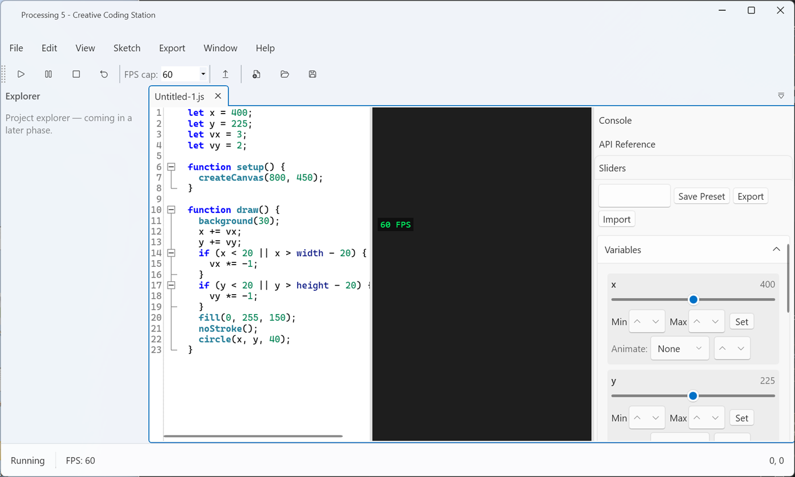
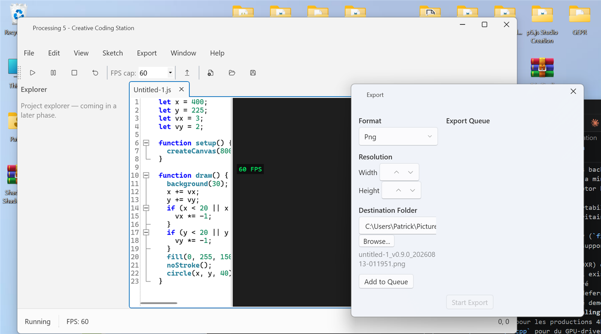

Screenshots


Features
- Fluent-themed interface WPF-UI with Mica/Acrylic and light/dark/system theming.
- Offline sketch viewport Embedded WebView2, p5.js and p5.sound vendored locally, served over a loopback-only local server — no CDN, no network calls.
- Full code editor AvalonEdit with p5.js-aware syntax highlighting, folding, autocomplete, and inline error markers.
- Intelligent sliders Live numeric-literal-to-UI binding, with presets and per-slider animation.
-
Full p5.js API coverage
2D, WEBGL, Sound,
p5.Vector/p5.Table, custom GLSL shaders, DOM, plus a searchable offline API reference. - Deterministic export pipeline WebM, MP4, GIF, PNG/JPEG, with GPU-accelerated encoding where available and automatic CPU fallback.
Get started
Download the installer for your architecture from the latest release. Building from source and licensing details are documented in the repository's COMPILATION.md.